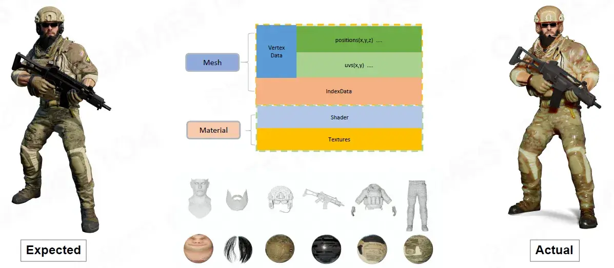
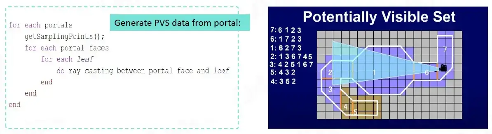
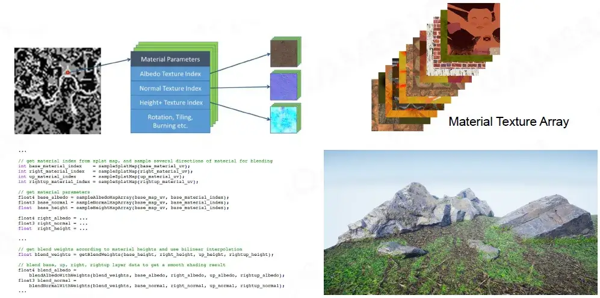
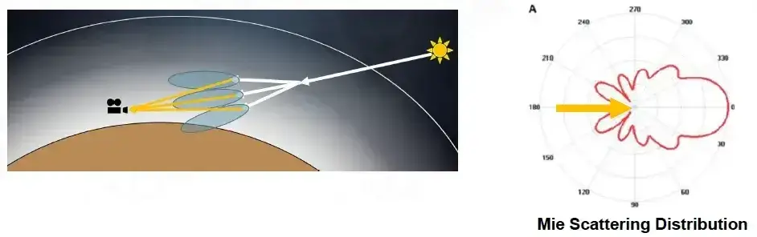
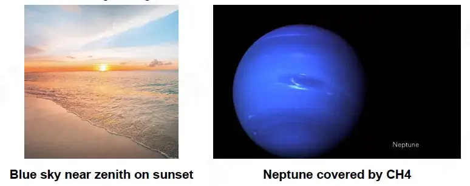
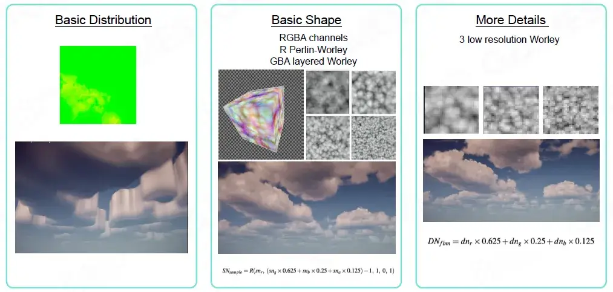
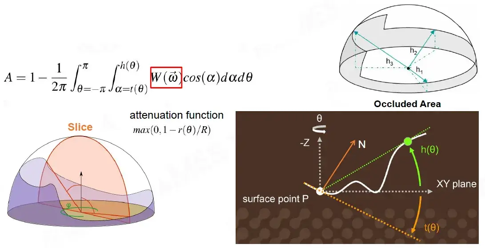
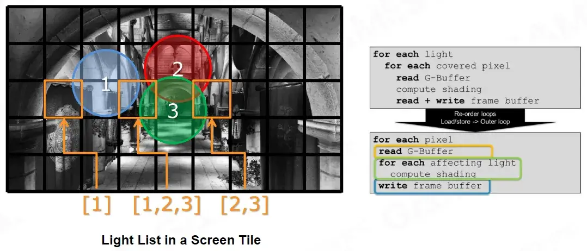

资源
- GAMES104-现代游戏引擎：从入门到实践_哔哩哔哩_bilibili
- GAMES104 - 现代游戏引擎入门必修课 (boomingtech.com)
- Piccolo 社区 - 游戏引擎爱好者的新家园 (piccoloengine.com)
- BoomingTech/Piccolo: Piccolo (formerly Pilot) – mini game engine for games104 (github.com)
- GAMES104：现代游戏引擎，从理论到实践 - 知乎 (zhihu.com)
课程
第四节：游戏引擎中的渲染实践
Rendering on Game Engine
Rendering System in Games
游戏渲染发展历程。
Q: Is there any game without rendering?
有。比如文字游戏。
Rendering on Graphics Theory
-
Objects with one type of effect
具有一种效果的对象
-
Focus on representation and math correctness
注重表示和数学正确性
-
No strict performance requirement
无严格的性能要求
-
Realtime (30 FPS) / interactive (10 FPS)
实时 (30 FPS) / 交互式 (10 FPS)
对于游戏来说，应保证游戏画面流畅
-
offline rendering
离线渲染（无法实时渲染，如电影，海报等，画质好）
-
Out-of-core rendering
核外渲染
-
Challenges on Game Rendering (1/4)
Tens of thousands of objects with dozens type of effects
数万个物体，数十种效果。容易跑不动。
Challenges on Game Rendering (2/4)
Deal with architecture of modern computer with a complex combination of CPU and GPU
处理具有 CPU 和 GPU 复杂组合的现代计算机体系结构。（设计游戏引擎时，要考虑 CPU 和 GPU 的架构来写代码）
Challenges on Game Rendering (3/4)
Commit a bullet-proof framerate
保证帧率
-
30 FPS (60 FPS,120 FPS + VR)
-
1080P, 4K and 8K resolution
现在对游戏的分辨率和帧率要求越来越高了。
Challenges on Game Rendering (4/4)
-
Limit access to CPU bandwidthand memory footprint
限制对 CPU 带宽和内存占用的访问
-
Game logic, network, animation, physics and Al systems are major consumers of CPU and main memory
游戏逻辑、网络、动画、物理和人工智能系统是 CPU 和主存的主要消耗者
Rendering on Game Engine
A heavily optimized practical software framework to fulfill the critical rendering requirements of games on modern hardware (PC, console and mobiles)
高度优化的实用软件框架，可满足现代硬件（PC、游戏机和移动设备）上游戏的关键渲染要求
Outline of Rendering
本课程主要介绍的渲染技术，仅是蜻蜓点水，这玩意太复杂了。
-
Basics of Game Rendering
游戏渲染基础知识
-
Hardware architecture
硬件架构
-
Render data organization
渲染数据组织
-
Visibility
能见度
-
-
Materials, Shaders and Lighting
材质、着色器和光照
-
PBR (SG, MR)
PBR（SG、MR）
-
Shader permutation
着色器排列
-
Lighting
灯光
-
Point / Directional lighting
点/定向照明
-
IBL / Simple GI
IBL / 简单 GI
-
-
-
Special Renering
特殊渲染
-
Terrain
地形
-
Sky / Fog
天空/雾
-
Postprocess
后期处理
-
-
Pipeline
管道
-
Forward, deferred rendering, forward plus
前向、延迟渲染、前向加号
-
Real pipeline with mixed effects
具有混合效果的真实管道
-
Ring buffer and V-Sync
环形缓冲区和垂直同步
-
Tiled-based rendering
基于平铺的渲染
-
What Is Not Included
-
Cartoon Rendering
卡通渲染（非真实渲染）
-
2D Rendering Engine
二维渲染引擎（三渲二）
-
Subsurface
皮肤
-
Hair /Fur
头发 / 皮毛
Building Blocks of Rendering
渲染的构建块
Rendering Pipeline and Data
渲染管道及数据
图像的渲染过程。从 GAMES101 里搬来的图。
Tens of millions of pixels with hundreds ALU and dozen of texture samplings.
数千万像素，数百个 ALU 和数十个纹理采样。
Computation - Projection and Rasterization
计算-投影和光栅化
Computation - Shading
计算-着色
写的 Shader 在显卡中存储/计算。
A shader sample code
着色器示例代码
-
Constants /Parameters
常量/参数
-
ALU algorithms
ALU 算法
-
Texture Sampling
纹理采样
-
Branches
分支
Computation -Texture Sampling
计算-纹理采样
-
Step1
Use two nearest mipmap levels
使用两个最近的 mipmap 级别
-
Step2
Perform bilinear interpolation in both mip-maps
在两个 mip-map 中执行双线性插值
-
Step3
Linearly interpolate betweenthe results
在结果之间进行线性插值
Understanding the Hardware
即使是游戏开发者/技术美术工作人员，了解一下显卡的基本架构也是很有用的。
GPU
The dedicated hardware to solve massive jobs
解决大量工作的专用硬件
SIMD and SIMT
SlMD (Single Instruction Multiple Data 单指令多数据)
-
Describes computers with multiple processing elements that perform the same operation on multiple data points simultaneously
描述具有多个处理元件的计算机，这些元件同时对多个数据点执行相同的操作
SlMT (Single Instruction Multiple Threads 单指令多线程)
-
An execution model used in parallel computing where single instruction, multiple data (SlMD) is combined with multithreading
并行计算中使用的执行模型，其中单指令、多数据 (SlMD) 与多线程相结合
GPU Architecture
GPC (Graphics Processing Cluster 图形处理集群)
A dedicated hardware block for computing, rasterization, shadingand texturing
用于计算、光栅化、着色和纹理的专用硬件块
SM (Streaming Multiprocessor 流式多处理器)
Part of the GPU that runs CUDA kernels
运行 CUDA 内核的 GPU 的一部分
Texture Units 纹理单位
A texture processing unit, that can fetch and filter a texture
纹理处理单元，可以获取和过滤纹理
CUDA Core
Parallel processor that allow data to be workedon simultaneously by different processors
并行处理器允许不同处理器同时处理数据
Warp
A collection of threads
线程的集合
Data Flow from CPU to GPU
-
CPU and Main Memory
CPU 和主内存
-
Data Load / Unload
数据加载/卸载
-
Data Preparation
数据准备
-
-
CPU to GPU
-
High Latency
高延迟
-
Limited Bandwidth
带宽有限
-
-
GPU and Video Memory
GPU 和视频内存
-
High Performance Parallel Rendering
高性能并行渲染
-
Always minimize data transfer between CPU and GPU when possible
尽可能减少 CPU 和 GPU 之间的数据传输
Be Aware of Cache Efficiency
Cache 比内存更快，尽量少做内存交换。
-
Take full advantage of hardware parallel computing
充分利用硬件并行计算
-
Try to avoid the von Neumann bottleneck
尽量避免冯诺依曼瓶颈
GPU Bounds and Performance
GPU 限制和性能
Application performance is limited by:
应用程序性能受到以下因素的限制：
-
Memory Bounds
内存限制
-
ALU Bounds
ALU 边界
-
TMU (Texture Mapping Unit) Bound
TMU（纹理映射单元）绑定
-
BW (Bandwidth) Bound
BW（带宽）限制
Modern Hardware Pipeline

-
Direct3D 12graphics pipeline
Direct3D 12 图形管道
-
Mesh and amplification shaders
网格和放大着色器
-
Direct3D 12 compute pipeline
Direct3D 12 计算管道
Other State-of-Art Architectures
其他最先进的架构
GPU:
1.825 GHZ, 52CUS, 12 TFLOPS FP32,332 8streaming processors
DRAM:
16 GB GDDR6, 10GB high memory interleave + 6GB low memory interleave
20 channels of x16 GDDR6 @ 14 Gbps->560GB
CPU:
8x Zen2 CPU cores @ 3.8 GHz, 3.6 GHz W/SMT 32KB L1 I,512KB L2 per CPU core
Renderable
Mesh Render Component
-
Everything is a game object in the game world
游戏世界中的一切都是游戏对象
-
Game object could be described in the component-based way
游戏对象可以用基于组件的方式描述
Building Blocks of Renderable
可渲染的构建块
Mesh Primitive
网格基元
Vertex and Index Buffer
顶点和索引缓冲区
-
Vertex Data
顶点数据
-
Vertex declaration
顶点声明
-
Vertex buffer
顶点缓冲区
-
-
Index Data
索引数据
-
Index declaration
索引声明
-
Index buffer
索引缓冲区
-
Why We Need Per-Vertex Normal
为什么我们需要顶点法线？如果根据面法线计算的话，对于转角处，顶点法线方向可能会有歧义。
Materials
Determine the appearance of objects, and how objects interact with light
确定物体的外观以及物体如何与光相互作用
Famous Material Models
Phong Model
PBR Model - Physically based rendering 基于物理的渲染
Subsurface Material - Burley SubSurface Profile 渲染皮肤
Various Texures in Materials
Variety of Shaders

Render Objects in Engine
Coordinate System and Transformation
坐标系和变换
Model assets are made based on local coordinate systems, and eventually we need to render them into screen space
模型资源是基于局部坐标系制作的，最终我们需要将它们渲染到屏幕空间中
Object with Many Materials

如果一个对象仅使用一个材质，渲染出的效果可能不够真实。
How to Display Different Textures on a Single Model
将 Object 模型分为多个 Submesh，每个 Submesh 使用不同的 Material。
如果每个 Submesh 都占据显存的空间，会导致浪费。
Resource Pool
使用一个资源池，加强资源的复用。
Instance: Use Handle to Reuse Resources
实例：使用句柄重用资源

Sort by Material
GPU Batch Rendering
GPU Batch Rendering 是一种图形渲染技术，它利用计算机的 GPU（Graphics Processing Unit）来加速图形渲染过程。在传统的图形渲染中，每个物体都需要单独渲染，这会导致大量的数据传输和渲染时的负载，降低了渲染效率。
而 GPU Batch Rendering 则可以将多个物体合并成一个批次（Batch），同时进行渲染。这种方式可以减少数据传输，提高渲染效率，特别是在大规模场景和复杂模型的情况下，可以极大地提高渲染速度。
Q: What if group rendering all instances with identical submeshes and materials together?
问：如果将具有相同子网格和材质的所有实例分组渲染在一起会怎样？
Visibility Culling
可见性剔除
Culling One Object
View Frustum
观察片元
Solider Bounding Box
士兵边界框
Using the Simplest Bound to Create Culling
使用最简单的绑定来创建剔除
-
Inexpensive intersection tests
廉价的交叉测试
-
Tight fitting
紧身
-
Inexpensive to compute
计算成本低廉
-
Easy to rotate and transform
易于旋转和变换
-
Use little memory
使用很少的内存
Hierarchical View Frustum Culling
使用 Quad Tree Culling 和 BVH 等，排除不可见对象
Construction and insertion of BVH in Game Engine
游戏引擎中 BVH 的构建和插入
PVS (Potential Visibility Set)
PVS（潜在可见性集）
PVS（Potentially Visible Set）是一种基于空间划分的可视性剔除算法，用于在三维场景中快速确定观察点能够看到哪些物体。
PVS 算法的基本思想是将场景分割成多个相邻的小区域（如八叉树等），然后对每个小区域计算其与其他小区域的可见性关系，即确定一个小区域可以直接看到哪些相邻的小区域，这些可见的小区域组成了该小区域的 PVS 集合。
当观察点移动时，只需要判断当前观察点所处的小区域的 PVS 集合中是否包含其他小区域，从而确定哪些物体需要被渲染。这种方法可以大大减少需要渲染的物体数量，提高渲染效率。
PVS 算法还可以通过优化 PVS 集合的计算和存储方式，以及合并相邻小区域的 PVS 集合等手段进一步提高效率。但是，由于 PVS 算法依赖于场景的空间划分，因此对于具有复杂几何形状或存在大量遮挡物的场景，该算法可能会带来较大的计算负担。
Portal and PVS Data

Determine potentially visible leaf nodes immediately from portal
立即从门户确定潜在可见的叶节点
The ldea of Using PVS in Stand-alone Games
单机游戏中 PVS 的使用思路
Green box:
The area to determine the potential visibility where you need
确定您需要的潜在可见度的区域
Blue cells:
Auto generated smaller regions of each green box.
自动生成每个绿色框的较小区域。
**Pros **优点
-
Much faster than BSP/Octree
比 BSP/八叉树快得多
-
More flexible and compatible
更灵活、更兼容
-
Preload resources by PVS
通过 PVS 预加载资源
GPU Culling
先不渲染材质，根据深度信息排除掉不可见部分后再渲染。
Texture Compression
纹理压缩
A must-know for game engine
游戏引擎必须了解的知识
Texture Compression
-
Traditional image compression like JPG and PNG
传统图像压缩，如 JPG 和 PNG
-
Good compression rates
良好的压缩率
-
lmage quality
图像质量
-
Designed to compress or decompress an entire image
设计用于压缩或解压缩整个图像
-
-
In game texture compression
游戏中的纹理压缩
-
Decoding speed
解码速度
-
Random access
随机访问（传统图像压缩无法做到随机访问，即快速获取某个坐标的颜色值）
-
Compression rate and visual quality
压缩率和视觉质量
-
Encoding speed
编码速度
-
Block Compression
Common block-based compression format
常见的基于块的压缩格式
-
On PC, BC7 (modern) or DXTC (old) formats
在 PC 上，BC7（现代）或 DXTC（旧）格式
-
On mobile, ASTC (modern) or ETC / PVRTC (old) formats
在移动设备上，ASTC（现代）或 ETC / PVRTC（旧）格式
Authoring Tools of Modeling
建模创作工具
Modeling - Polymodeling
使用基于多边形建模的软件。
Modeling - Sculpting
ZBrush 提供了一种新的建模概念——雕刻。
Modeling -Scanning

使用扫描仪建模。
Modeling - Procedural Modeling
程序化建模：
Comparison of Authoring Methods
创作方法比较
| Polymodeling | Sculpting | Scanning | Procedural modeling | |
|---|---|---|---|---|
| Advantage | Flexible | Creative | Realistic | Intelligent |
| Disadvantage | Heavy workload | Large volume of data | Large volume of data | Hard to achieve |
Cluster-Based Mesh Pipeline
基于集群的网格管道
Sculpting Tools Create Infinite Details
雕刻工具创造无限细节
-
Artists create models with infinite details
艺术家创造具有无限细节的模型
-
From linear fps to open world fps, complex scene submit 10more times triangles to GPU per-frame
从线性 fps 到开放世界 fps，复杂场景每帧向 GPU 提交 10 倍以上的三角形
Cluster-Based Mesh Pipeline
基于集群的网格管道
GPU-Driven Rendering Pipeline (2015) GPU 驱动的渲染管道 (2015)
-
Mesh Cluster Rendering
网格簇渲染
-
Arbitrary number of meshes in single drawcal
单次绘制中任意数量的网格
-
GPU-culled by cluster bounds
按集群边界进行 GPU 剔除，一个对象中的不可见部分就不渲染了
-
Cluster depth sorting
聚类深度排序
-
Geometry Rendering Pipeline Architecture (2021) 几何渲染管线架构（2021）
-
Rendering primitives are divided as:
渲染基元分为：
-
Batch: a single APl draw (drawlndirect /drawIndexIndirect), composed of many Surfs
Batch：单个 APl 绘制（drawlndirect /drawIndexIndirect），由许多 Surf 组成
-
Surf: submeshes based on materials, composed of many Clusters
Surf：基于材质的子网格，由许多簇组成
-
Cluster: 64 triangles strip
簇：64 个三角形条
-
Programmable Mesh Pipeline
GPU Culling in Cluster-Based Mesh
基于集群的网格中的 GPU 剔除
背面的 cluster 就看不见了。
Nanite
-
Hierarchical LOD clusters with seamless boundary
具有无缝边界的分层 LOD 集群
-
Don’t need hardware support, but using a hierarchical cluster culling on the precomputed BVH tree by persistent threads (CS) on GPU instead of task shader
不需要硬件支持，但通过 GPU 上的持久线程（CS）而不是任务着色器对预先计算的 BVH 树使用分层集群剔除
Take Away
-
The design of game engine is deeply related to the hardware architecture design
游戏引擎的设计与硬件架构设计有很深的关系
-
A submesh design is used to support a model with multiple materials
采用子网格设计来支持多种材质的模型
-
Use culling algorithms to draw as few objects as possible
使用剔除算法绘制尽可能少的对象
-
As GPU become more powerful, more and more work are moved into GPU, which called GPu Driven
随着 GPU 越来越强大，越来越多的工作转移到 GPU 上，这就是 GPU 驱动
第五节：渲染中光和材质的数学魔法
Rendering on Game Engine
Lighting, Materials and Shaders
Participants of Rendering Computation
渲染计算参与者
-
Lighting
灯光
-
Photon emit, bounce, absorb and perception is the origin of everything in rendering
光子的发射、反弹、吸收和感知是渲染中一切的起源
-
-
Material
材料
-
How matter react to photon
物质如何对光子做出反应
-
-
Shader
着色器
-
How to train and organize those micro-slaves to finish such a vast and dirty computation job between photon and materials
如何训练和组织这些微型奴隶来完成光子和材料之间如此庞大而肮脏的计算工作
-
An interesting adventure story joined by smart graphics scientists and engineers based on evolution of hardware.
智能图形科学家和工程师基于硬件的演变而加入的有趣冒险故事。
The Rendering Equation
James Kajiya 在 1986 年的 SIGGRAPH 提出了渲染方程：
Radiance（辐射度）指的是在给定方向上单位面积上的能量辐射量。它表示了光线从光源或物体表面出射的能量。Radiance 与发射光线的方向、面积以及能量有关，通常用符号 L 表示，单位为 （瓦特/球面弧度平方米）。
Irradiance（入射照度）指的是单位面积上受到的来自各个方向的光能量的总和。它表示了光线对物体表面的照射强度。Irradiance 与入射光线的方向、面积以及能量有关，通常用符号 E 表示，单位为 （瓦特/平方米）。
虽然这个方程很早就被提出，但是想要正确又高效地计算这个方程太困难了。
Complexity of Real Rendering
现实生活中的光太复杂了。
-
Indirect light
间接光
-
Indirect shadow
间接阴影
-
Direct light
直射光
-
Scattering
散射
-
Caustics
焦散
-
Glossy reflections
光泽反射
The 1st Challenge: 1a Visibility to Lights
第一困难：计算光照是否可见
The 1st Challenge: 1b Light Source Complexity
第一困难：光照种类复杂
The 2nd Challenge: How to do Integral Efficiently on Hardware
第二个挑战：如何在硬件上高效地进行积分
-
Brute-force way sampling
暴力方式采样
-
Smarter sampling, i.e., Monta Carlo
更智能的采样，即蒙塔卡罗
-
Derive fast analytical solutions
得出快速分析解决方案
-
Simplify the :
简化 ：
-
Assumptions the optical properties of materials
假设材料的光学特性
-
Mathematical representation of materials
材料的数学表示
-
-
Simplify the :
简化：
-
Deal with directional light, point light and spot light only
仅处理定向光、点光和聚光灯
-
A mathematical representation of incident light sampling on a hemisphere, for ex: lBL and SH
半球上入射光采样的数学表示，例如：lBL 和 SH
-
-
The 3rd Challenge: Any matter will be light source
挑战之三：任何物质都可以成为光源（会反射光）
Starting from Simple
Forget some abstract concepts for a while, ie. radiosity, microfacet and BRDF etc
暂时忘记一些抽象概念，即。光能传递、微面、BRDF 等
Simple Light Solution
1 | |
-
Using simple light source as main light
使用简单光源作为主光
-
Directional light in most cases
大多数情况下是定向光
-
Point and spot light in special case
特殊情况下的点光源和聚光灯
-
-
Using ambient light to hack others
利用环境光攻击他人
-
A constant to represent mean of complex hemisphere irradiance
表示复半球辐照度平均值的常数
-
-
Supported in graphics APl
图形 API 支持
Environment Map Reflection
-
Using environment map to enhance glossary surface reflection
使用环境贴图增强词汇表（？）表面反射
-
Using environment mipmap to represent roughness of surface
使用环境 mipmap 来表示表面的粗糙度
1 | |
Early stage exploration of image-based lighting
基于图像的照明的早期探索
Math Behind Light Combo
光组合背后的数学
-
Main Light
主光源
-
Dominant Light
主光源
-
-
Ambient Light
环境光
-
Low-frequency of irradiance sphere distribution
低频辐照度球体分布
-
-
Environment Map
环境贴图
-
High-frequency of irradiance sphere distribution
高频辐照度球体分布
-
Blinn-Phong Materials
冯光照模型是个很经典的光照模型，虽然现在有点过时了。
Problem of Blinn-Phong
-
Not energy conservative
不符合能量守恒定律（可能越反射越亮）
-
Unstable in ray-tracing
光线追踪不稳定
-
Left non-energy conserving model lead a lot of noise compare Right energy conserving model
左边的非节能模型与右边的节能模型相比会产生很多噪音
-
Hard to model complex realistic material
难以模拟复杂材质（冯模型模拟出来都有一股塑料感）
Shadow
-
Shadow is nothing but space when the light is blocked by an opaque object
当光线被不透明物体阻挡时，阴影只不过是空间
-
Already obsolete method
已经过时的方法
-
planar shadow
平面阴影
-
shadow volume
阴影体积
-
projective texture
投影纹理
-
Shadow Map
Shadow Map 是计算机图形学中用于实现阴影的一种技术。它基于光线追踪的概念，将场景从光源的视角渲染到一个深度纹理贴图上，以便在后续的渲染中使用这个纹理来确定哪些表面处于阴影之中。
计算出阴影贴图。用一张 texture 表示阴影。
1 | |
Problem of Shadow Map
Resolution is limited on texture
分辨率受纹理限制
Depth precision is limited in texture
深度精度受到纹理的限制
Basic Shading Solution
-
Simple light + Ambient
简单光 + 环境光
-
dominent light solves No. 1b
主光解决了第 1b 项挑战
-
ambient and EnvMap solves No.3 challanges
环境光和 EnvMap 解决了第 3 项挑战
-
-
Blinn-Phong material
-
solve No.2 challange
解决第 2 项挑战
-
-
Shadow map
阴影贴图
-
solve No.1a challange
解决第 1a 项挑战
-
Cheap, Robust and Easy Modification
便宜、鲁棒且易于修改
First Wave of AAA Quality
3A 游戏的渲染技术不断发展。
Pre-computed Global Illumination
用一个环境光常量来模拟其他物体反射出的所有光，减少计算。
Why Global llumination is lmportant
如果不考虑光的反射，大片面积将会一坨黑。
How to Represent indirect Light
-
Good compression rate
良好的压缩率
-
We need to store millions of radiance probes in a level
我们需要在一个水平仪中存储数百万个辐射探头
-
-
Easy to do integration with material function
易于与材料功能集成
-
Use polynomial calculation to convolute withmaterial BRDF
使用多项式计算与材质 BRDF 进行卷积
-
计算光照用到了下面数学工具：
Fourier Transform
傅里叶变换让函数在时域和空域之间转换。
Convolution Theorem
引入傅里叶变换，让卷积速度更快！
Spherical Harmonics
球谐函数
Spherical Harmonics（球谐函数）是一组用于描述球面上函数的数学函数系列。在计算机图形学中，球谐函数被广泛应用于光照和环境光的表示与计算。
Spherical Harmonics, a mathematical system analogous to the Fourier transform but defined across the surface of a sphere. The SH functions in general are defined on imaginary numbers
球谐函数，一种类似于傅立叶变换的数学系统，但定义在球体表面。SH 函数一般是根据虚数定义的
Spherical Harmonics Encoding
Sampling lrradiance Probe Anywhere
Compress lrradiance Probe to SH1
Lrradiance Probe（辐照度探针）是计算机图形学中用于捕捉和近似表示环境光照信息的技术。它通过在场景中放置一系列探针来采样场景中的辐照度（irradiance），并将这些采样结果存储起来，以便在渲染过程中使用。
-
Source lrradiance Probe
光源辐照度探头
-
Compressed lrradiance Probe By SH1
SH1 的压缩辐照度探头
-
Reconstruct lrradiance In Shader
在着色器中重建光照度
Store and Shading with SH
Just RGBA8 color
-
Use 4 RGB textures to store 12 SH coefficients
使用 4 个 RGB 纹理来存储 12 个 SH 系数
-
coefficients in HDR (BC6H texture)
HDR 中的 系数（BC6H 纹理）
-
coefficients in LDR (3x Bc7 or BC1 textures)
LDR 中的 系数（3x Bc7 或 BC1 纹理）
-
-
Total footprint for RGB SH lightmaps:
RGB SH 光照贴图的总占用空间：
-
32 bits (4 bytes)/texel for Bc6+Bc7, high quality mode
Bc6+Bc7 32 位（4 字节）/texel，高质量模式
-
20 bits (2.5 bytes) texel for Bc6+Bc1, low quality mode
Bc6+Bc1 的 20 位（2.5 字节）纹理元素，低质量模式
-
Simple diffuse shading
SH Lightmap: Precomputed GI
SH 光照贴图：预计算 GI
空间换时间。
SH Lightmap 是一种基于球谐函数（Spherical Harmonics）的光照贴图技术，可以用于近似表示场景中的光照信息。它通过将场景的光照信息转换为球谐系数并存储到贴图上，以便在渲染时快速计算每个片元的光照贡献。
-
Parameterized all scene into huge 2D lightmap atlas
将所有场景参数化为巨大的 2D 光照图集
-
Using offline lighting farm to calculate irradiance probes for all surface points
使用离线照明场计算所有表面点的辐照度探头
-
Compress those irradiance probes into SH coefficients
将这些辐照度探头压缩为 SH 系数
-
Store SH coefficients into 2D atlas lightmap textures
将 SH 系数存储到 2D 图集光照贴图纹理中
Lightmap: UV Atlas
Lightmap density
光照贴图密度
-
Low-poly proxy geometry
低多边形代理几何体
-
Fewer UV charts/islands
更少的紫外线图表/岛屿
-
Fewer lightmap texels are wasted
浪费的光照贴图纹理像素更少
Lightmap: Lighing
Indirect lighting, finalgeometry
间接照明，最终几何
-
Project lightmap from proxiesto all LODs
将光照贴图从代理投影到所有 LOD
-
Apply mesh details
应用网格细节
-
Add short-range, high-frequency lighting detail by HBAO
通过 HBAO 添加短距离、高频照明细节
Lightmap: Lighting + Direct Lighting
光照贴图：光照+直接光照
Direct + indirect lighting, final geometry
直接+间接照明，最终几何形状
-
Compute direct lighting dynamically
动态计算直接照明
Final Shading with Materials
Final frame
最终帧
-
Combined with materials
与材质结合
Lightmap
-
Pros
优点
-
Very efficient on runtime
运行时非常高效
-
Bake a lot of fine details of Gl on environment
在环境上烘焙了 GL 的很多细节
-
-
Cons
缺点
-
Long and expensive precomputation (lightmap farm)
漫长而昂贵的预计算（光照贴图农场）
-
Only can handle static scene and static light
只能处理静态场景和静态灯光
-
Storage cost on package and GPU
包和 GPU 的存储成本
-
Light Probe: Probes in Game Space
Light Probe Point Generation
Reflection Probe
Light Probes + Reflection Probes
-
Pros
优点
-
Very efficient on runtime
运行时非常高效
-
Can be applied to both static and dynamic objects
可应用于静态和动态对象
-
Handle both diffuse and specular shading
处理漫反射和镜面反射着色
-
-
Cons
缺点
-
A bunch of SH light probes need some precomputation
一堆 SH 光探头需要一些预计算
-
Can not handle fine detail of Gl. l.e, soft shadow on overlapped structures
无法处理 GL 的精细细节。即，重叠结构上的软阴影。
-
Physical-Based Material
Microfacet Theory
微平面理论。
BRDF Model Based on Microfacet
基于 Microfacet 的 BRDF 模型
Normal Distribution Function
Geometric Attenuation Term (self-shadowing)
\begin{gathered} f_{CookTorrance}=\frac{DFG}{4(\omega_o\cdot n)(\omega_i\cdot n)} \\ G_{Smith}(l,\nu)=G_{GGX}(l)\cdot G_{GGX}(\nu) \\ G_{GGX}(\nu)=\frac{n\cdot\nu}{(n\cdot\nu)(1-k)+k}\quad k=\frac{(\alpha+1)^{2}}{8} \end{gathered} 在计算机图形学中，几何衰减项（self-shadowing）是指在渲染过程中考虑物体自身阴影对光照效果的影响。当光线射向一个物体表面时，如果该表面的某些部分被遮挡，这些被遮挡的部分就会处于阴影之中，从而无法直接受到光的照射，导致其表面变暗。
几何衰减项通常用于模拟光线在渲染过程中如何与物体表面相互作用，从而影响最终的光照结果。这种效应特别明显的情况是当光源和观察者之间有障碍物时，如一个物体投射的阴影落在自身表面上。
几何衰减项可以通过各种方式来实现，其中一种常见的方式是使用阴影映射（shadow mapping）技术。在阴影映射中，首先从光源的视角渲染场景，并将渲染结果保存在一个深度贴图（depth map）中。然后，对于每个像素，通过比较深度贴图中的深度值来确定该像素是否在阴影之中。如果某个像素被深度贴图中的深度值所遮挡，那么该像素就被认为处于阴影之中，从而进行相应的颜色调整，实现几何衰减效果。
1 | |
Fresnel Equation
当视角接近反射平面时，反射率会急剧上升。
这个 5 次方是数学家推导出来的。
1 | |
Physical Measured Material
MERL BRDF Database of measured materials
这个数据集测量了各种材质的数据。
Disney Principled BRDF
Principles to follow when implementing model:
实施模型时应遵循的原则：
-
Intuitive rather than physical parameters should be used
应使用直观参数而不是物理参数
-
There should be as few parameters as possible
参数应该尽可能少
-
Parameters should be zero to one over their plausible range
参数在其合理范围内应为 0 到 1
-
Parameters should be allowed to be pushed beyond their plausible range where it makes sense
应允许参数超出其合理范围
-
All combinations of parameters should be as robust and plausible as possible
所有参数组合应尽可能稳健且合理
Disney Principle Material Parameters
Disney Principled BRDF 是迪士尼（Disney）开发的一种基于物理的渲染表面模型，用于在计算机图形学中模拟材质的外观。BRDF 是 Bidirectional Reflectance Distribution Function 的缩写，用于描述光线从表面反射的方式。Disney Principled BRDF 将多个常见的渲染表面模型（如 Lambert、Blinn-Phong、Cook-Torrance 等）融合成一个单一的、参数化的模型，使得艺术家和技术人员可以更简单地控制材质的外观，并且更好地满足物理真实性的要求。
Disney Principled BRDF 的主要特点和参数包括：
基础颜色（Base Color）： 表示表面的颜色，即在没有其他光照影响的情况下表面的颜色。
金属度（Metallic）： 表示表面是否具有金属质感。金属度为 0 表示非金属材质，金属度为 1 表示完全是金属材质。
粗糙度（Roughness）： 表示表面的光滑程度。粗糙度为 0 表示表面非常光滑，反射光线呈现清晰的镜面反射，而粗糙度为 1 表示表面非常粗糙，反射光线呈现模糊的散射。
法线（Normal）： 表示表面的法线方向，用于模拟表面的微观凹凸结构。
环境遮挡（Ambient Occlusion）： 用于模拟光线在表面附近的阴影效果，增强表面的立体感。
Disney Principled BRDF 的优点在于它简化了材质创建的流程，减少了需要调整的参数数量，同时也更符合物理真实性。通过调整基础颜色、金属度和粗糙度等参数，可以实现多种不同类型材质的外观，包括金属材质、塑料、玻璃等。
这种模型的广泛应用使得它成为了许多计算机图形学软件和引擎中的标准渲染模型之一，例如 Pixar 的 RenderMan、Blender 内置的 Cycles 渲染引擎等。
PBR Specular Glossiness
Specular Glossiness（高光光泽度）是一种用于描述材质表面反射特性的属性。它通常被用于渲染引擎和材质编辑器中，用于控制物体表面的光泽程度以及高光的大小和清晰度。
PBR Metallic Roughness
Metallic Roughness 是一种用于描述材质外观的参数化模型，通常用于计算机图形学中的渲染。它是 Disney Principled BRDF 中的两个主要参数之一，用于控制材质的金属度和粗糙度，从而影响表面的反射和散射行为。
- 金属度（Metallic）： 这个参数表示表面材质的金属属性程度。金属度为 0 表示非金属材质，例如塑料、木材等，而金属度为 1 表示完全是金属材质，例如铁、铜等。金属材质具有较强的镜面反射特性，因此在光照下会产生清晰的高光反射，而非金属材质则通常具有更多的漫反射。
- 粗糙度（Roughness）： 这个参数表示表面的光滑程度。粗糙度为 0 表示表面非常光滑，反射光线呈现清晰的镜面反射，而粗糙度为 1 表示表面非常粗糙，反射光线呈现模糊的散射。具有较高粗糙度的表面会导致光线在各个方向上散射，产生柔和的光照效果，而较低粗糙度的表面则会产生更锐利的反射光线。
Covert MR to SG
PBR Pipeline MR vs SG
MR
-
Pros
-
Can be easier to author and less prone to errors caused by supplying incorrect dielectric F0 data
可以更轻松地编写，并且不易因提供不正确的介电 F0 数据而导致错误
-
Uses less texture memory, as metallic and roughness are both grayscale maps
使用更少的纹理内存，因为金属和粗糙度都是灰度图
-
-
Cons
-
No control over F0 for dielectrics in map creation. However, most implementations have a specular control to override thebase 4% value
在创建地图时无法控制电介质的 F0。然而，大多数实现都有镜面反射控制来覆盖 4% 的基本值
-
Edge artifacts are more noticeable, especially at lowerresolutions
边缘伪影更加明显，尤其是在较低分辨率下
-
SG
-
Pros
-
Edge artifacts are less apparent
边缘伪影不太明显
-
Control over dielectric F0 in the specular map
控制镜面反射图中的电介质 F0
-
-
Cons
-
Because the specular map provides control over dielectric F0, it is more susceptible to use of incorrect values. lt is possible to break the law of conservation if handled incorrectly in the shader
由于镜面反射贴图提供对电介质 F0 的控制，因此更容易使用不正确的值。如果在着色器中处理不当，可能会违反守恒定律
-
Uses more texture memory with an additional RGB map
使用更多纹理内存和额外的 RGB 贴图
-
Image-Based Lighting (IBL)
Basic Idea of IBL
IBL（Image-Based Lighting）是一种计算机图形学中常用的光照技术，用于模拟真实世界中的光照效果。它基于图像的方式来描述光照信息，通过对环境中的光照进行捕捉和处理，来为场景中的物体赋予逼真的光照效果。
IBL 的基本原理是利用环境贴图（Environment Map）来模拟环境中的光照。环境贴图通常是一个球形或立方体贴图，捕捉了环境中的光照信息，包括天空、周围物体的反射等。这些贴图可以是基于真实场景拍摄的全景图像，也可以是通过计算得到的环境光照信息。
-
An image representing distant lighting from alldirections.
代表来自各个方向的远处照明的图像。
-
How to shade a point under the lighting?
如何在灯光下对点进行着色？
Solving the rendering equation:
求解渲染方程：
-
Using Monte Carlo integration
使用蒙特卡罗积分
Large amount of sampling-Slow!
采样量大-慢！
Recall BRDF Function
L_{o}(\boldsymbol{x},\omega_{o})=\int_{H^{2}}f_{r}(\boldsymbol{x},\omega_{o},\omega_{i})L_{i}(\boldsymbol{x},\omega_{i})\cos\theta_{i}d\omega_{i}\\f_{r}=k_{d}f_{Lambert}+f_{CookTorrance}- diffuse
- specular
Diffuse Irraiance Map
- Irraiance Map

Specular Approximation
Approximation: part (1/2)
Approximation: part (2/2)
Quick Shading with Precomputation
通过预计算进行快速着色
Shading PBR with IBL
加入环境贴图后，效果更加真实。
Classic Shadow Solution
Big World and Cascade Shadow
-
Partition the frustum into multiple frustums
将视锥体划分为多个视锥体
-
A shadow map is rendered for each sub frustum
为每个子视锥体渲染阴影贴图
-
The pixel shader then samples from the map that most closely matches the required resolution
像素着色器然后从与所需分辨率最匹配的贴图中进行采样
Steps of Cascade Shadow
层叠影阶
Cascade Shadow Mapping（级联阴影映射）是一种用于实时渲染中实现高质量阴影的技术。它被广泛应用于游戏引擎和其他实时渲染应用程序中，以提供更逼真的场景光照效果。
Cascade Shadow Mapping 的基本思想是将场景中的光源视锥体（例如平行光源的视锥体）分成多个不同分辨率的子区域，每个子区域被称为一个级联（cascade）。然后，为每个级联计算一个独立的深度贴图（depth map），用于记录从光源视角下每个像素到场景中可见点的距离。
通常，级联的数量和分辨率会根据距离光源的远近而动态调整，以确保远处的物体能够得到足够高的深度分辨率，从而减少阴影的锯齿状边缘（aliasing），同时避免过度消耗资源。通常情况下，近处级联具有更高的分辨率，而远处级联具有较低的分辨率。
一旦每个级联的深度贴图都准备好了，就可以在渲染阴影的阶段使用它们。具体来说，对于每个要接受阴影的像素，都会根据其在世界空间中的位置和光源的视角来计算其在每个级联深度贴图中的深度值。然后，通过比较每个像素的深度值与相应级联深度贴图中的深度值，就可以确定像素是否在阴影中。
1 | |
Blend between Cascade Layers
级联层之间的混合
-
A visible seam can be seen where cascades overlap
级联重叠处可以看到明显的接缝
-
between cascade layers because the resolution does not match
级联层之间因为分辨率不匹配
-
The shader then linearly interpolates between the two values based on the pixel’s location in the blend band
然后，着色器根据像素在混合带中的位置在两个值之间进行线性插值
Pros and Cons of Cascade Shadow
-
Pros
-
best way to prevalent errors with shadowing: perspective aliasing
解决阴影常见错误的最佳方法：透视锯齿
-
fast to generate depth map, 3x up when depth writing only
快速生成深度图，仅深度写入时提高 3 倍
-
provide fairly good results
提供相当好的结果
-
-
Cons
-
Nearly impossible to generate high quality area shadows
几乎不可能生成高质量的区域阴影
-
No colored shadows. Translucent surfaces cast opaque shadows
没有彩色阴影。半透明表面投射不透明阴影
-
Hard Shadow vs Realistic Shadow
PCF - Percentage Closer Filter
PCF - 百分比接近过滤器
PCF（Percentage Closer Filter）是一种用于改善阴影质量的技术，特别是在阴影映射中使用。它的目的是减少阴影边缘的锯齿（aliasing），使阴影更加柔和和逼真。
阴影映射通常会生成一个深度贴图（depth map），用于记录从光源视角下到场景中各个点的距离。在渲染场景时，为了确定一个像素是否在阴影中，通常会比较场景中的点与光源的深度值。然而，简单地使用深度比较可能会导致锯齿状边缘，特别是在阴影投射到接近相机的表面上时。
PCF 解决了这个问题。它通过对深度贴图中的深度值进行多次采样，并计算每次采样时像素与深度值的关系，以确定像素是否在阴影中。这些采样通常是在深度贴图的附近进行的，并且通常是在一个较小的范围内。这样，即使像素与阴影边缘接近，也能够准确地检测出阴影的存在，从而减少锯齿状边缘的问题。
-
Target problem
目标问题
-
The shadows that result from shadow mapping aliasing is serious
阴影贴图锯齿导致的阴影很严重
-
-
Basic idea
基本思想
-
Sample from the shadow map around the current pixel and compare its depth to all the samples
从当前像素周围的阴影贴图进行采样，并将其深度与所有样本进行比较
-
By averaging out the results we get a smoother line between light and shadow
通过对结果进行平均，我们可以得到光影之间更平滑的线条
-
PCSS - Percentage Closer Soft Shadow
PCSS - 百分比接近软阴影
Percentage Closer Soft Shadow（PCSS）是一种用于实时渲染中生成柔和阴影的技术。它是 Percentage Closer Filter（PCF）的一种变体，旨在在阴影边缘产生更加柔和和逼真的效果。
PCSS 通过在每个像素处进行多个样本的深度比较，并根据深度比较结果和光源距离来计算阴影的柔和度。与传统的硬阴影相比，PCSS 考虑了阴影边缘周围的光线传播和遮挡，以模拟真实世界中光线的衍射和散射效应。
PCSS 的实现通常包括以下步骤：
- 生成阴影贴图（Shadow Map）： 首先，生成场景的深度贴图，用于记录从光源视角下到场景中各个点的距离。
- 多样本采样： 在渲染阶段，对于每个要接受阴影的像素，进行多个样本的深度比较。这些样本通常位于阴影边缘周围，并且可以通过多次采样来模拟光线的传播。
- 计算柔和阴影： 根据每个样本的深度比较结果以及光源与表面的距离，计算阴影的柔和度。通常，较远离光源的像素会产生较宽的阴影区域，而较接近光源的像素会产生较窄的阴影区域。
- 混合阴影： 将多个样本的阴影值进行加权平均，以获得最终的柔和阴影结果。这样可以使阴影边缘呈现出逐渐变化的过渡效果，减少锯齿状边缘。
-
Target problem
目标问题
-
Suffers from aliasing and under sampling artifacts
存在混叠和采样不足的问题
-
-
Basic idea
基本思想
-
Search the shadow map and average the depths that are closer to the light source
搜索阴影贴图并平均靠近光源的深度
-
Using a parallel planes approximation
使用平行平面近似
-
Variance Soft Shadow Map
-
Target problem
目标问题
-
Rendering plausible soft shadow in real-time
实时渲染合理的软阴影
-
-
Basic idea
基本思想
-
Based on Chebyshev’s inequality, using the average and variance of depth, we can approximate the percentage of depth distribution directly instead of comparing a single depth to a particular region (PCSS)
基于切比雪夫不等式，使用深度的平均值和方差，我们可以直接近似深度分布的百分比，而不是将单个深度与特定区域进行比较（PCSS）
-
Summary of Popular AAA Rendering
目前 3A 渲染广泛用到的技术：
- Lightmap + Light probe
- PBR + IBL
- Cascade shadow + VSSM
Moving Wave of High Quality
Quick Evolving of GPU
得益于 GPU 的发展，计算能力不断增强。
-
More flexible new shader model
更灵活的新着色器模型
-
Compute shader
计算着色器
-
Mesh shader
网格着色器
-
Ray-tracing shader
光线追踪着色器
-
-
High performance parallel architecture
高性能并行架构
-
Warp or wave architecture
扭曲或波浪结构
-
-
Fully opened graphics APl
完全开放的图形 APl
-
DirectX 12 and Vulkan
DirectX 12 和 Vulkan
-
Real-Time Ray-Tracing on GPU
新的 GPU 支持实时光线追踪。
Real-Time Global lllumination
More Complex Material Model
Virtual Shadow Maps

Shader Management
Ocean of Shaders
大游戏里用到的 Shader 非常多。
Blow of Shaders
要求在每帧中渲染场景中的多个 shader。
Artist Create infinite More Shaders
艺术家创造无限更多的着色器
Uber Shader and Variants
Uber 着色器和变体
A combination of shader for all possible light types, render passes and material types
适用于所有可能的灯光类型、渲染通道和材质类型的着色器组合
-
Shared many state and codes
共享许多状态和代码
-
Compile to many variant short shaders by pre-defined macro
通过预定义宏编译为许多变体短着色器
1 | |
Shader Variants Example In Real Game
真实游戏中的着色器变体示例
一大堆。为了降低耦合性，每个 shader 都是单独存在的。
Cross Platform Shader Compile
写 shader 也演变出了一堆语言！
- Shader 交叉编译之梦 - 知乎 (zhihu.com)
- KhronosGroup/SPIRV-Cross: SPIRV-Cross is a practical tool and library for performing reflection on SPIR-V and disassembling SPIR-V back to high level languages. (github.com) 让 shader 语言能够交叉编译。
第六节(上)：游戏中地形大气和云的渲染
MD 天书……
Rendering on Game Engine
The Challenges and Fun of Rendering the Beautiful Mother Nature
渲染美丽大自然的挑战和乐趣
Real-World Landscape
-
Huge geospatial scale
巨大的地理空间尺度
-
Rich geomorphological
地貌丰富
-
Vegetation
植被
-
Rivers
河流
-
Undulating peaks
起伏的山峰
-
Alpine snow
高山雪
-
…
-
Too Complex for Rendering Using Traditional Mesh + Material
使用传统网格 + 材质渲染过于复杂
Environment Components in Games
Simple Idea - Heightfield
Height Map
高度图
Contour Map
等高线图
-
Satellite image and google earth
卫星图像和谷歌地球
Expressive Heightfield Terrains
富有表现力的高度场地形
Render Terrain with Heightfield
使用高度场渲染地形

Adaptive Mesh Tessellation
自适应网格细分
fov 内的网格密集，外的不密集。
Two Golden Rules of Optimization
两条优化黄金法则
View-dependent error bound
视图相关的错误界限
-
Distance to camera and FoV
到相机和 FoV 的距离
-
Error compare to ground truth (pre-computation)
与真实情况相比的误差（预计算）
Triangle-Based Subdivision
基于三角形的细分
Subdivision and T-Junctions
T-Junctions（T 字连接）是在计算机图形学中用于描述三角形网格连接关系的术语。当两个或多个三角形共享一个边时，它们在连接点形成了 T 字型的结构。这种连接在三维网格模型的拓扑结构中相当常见。
T-Junctions 通常出现在网格的边缘、拐角或交叉点附近。它们可能会出现在几何体的建模、网格编辑、或者在进行几何操作（如网格合并、分割、细分等）时。在渲染阶段，T-Junctions 可能会导致一些问题，尤其是在基于三角形的图形渲染中，因为它们可能会导致不正确的图形拓扑和渲染结果。
Continuously partitioning triangles and their children based on the idea of binary trees
基于二叉树的思想连续划分三角形及其子节点
Triangle-Based Subdivision on GPU
根据 GPU 架构设计的算法。
QuadTree-Based Subdivision
基于四叉树的细分
Pros
-
Easy to construct
易于建造
-
Easy management of data under geospatial, including objects culling and data streaming
轻松管理地理空间下的数据，包括对象剔除和数据流
Cons
-
Mesh subdivision is not as flexible as triangle mesh
网格细分不如三角形网格灵活
-
The grid level of the leaf nodes needs to be consistent
叶子节点的网格层级需要一致

Solving T-Junctions among Quad Grids
求解四边形网格之间的 T 型连接点
Terrain Rendering with Quad Grid
使用四网格进行地形渲染
Triangulated lrregular Network (TlN)
不规则三角网络 (TlN)
Density Variants in TlN
TlN 中的密度变量
Triangulated lrregular Network vs. Adpative Tessellation
不规则三角网络与自适应曲面细分
Pros
-
Easy in runtime rendeirng
易于运行时渲染
-
Less triangls in certain terrain types
某些地形类型中的三角形较少
Cons
-
Requires certain pre-processing steps
需要一定的预处理步骤
-
Poor reusability
可重用性差
GPU-Based Tessellation
基于 GPU 的曲面细分
Hardware Tesselation
硬件曲面细分
Hul-Shader Stage - transforms basis functions from base mesh to surface patches
Hul-Shader Stage - 将基础函数从基础网格转换为表面补丁
Tessellator Stage - produces a semi-regular tessellation pattern for each patch
Tessellator Stage - 为每个补丁生成半规则的镶嵌图案
Domain-Shader Stage - a programmable shader stage that calculates the vertex position that corresponds to each domain sample
Domain-Shader Stage - 一个可编程着色器阶段，用于计算与每个域样本对应的顶点位置
Mesh Shader Pipeline
-
Amplification Shader Stage - decides how many Mesh shader groups to run and passes data to those groups
放大着色器阶段 - 决定运行多少个网格着色器组并将数据传递到这些组
-
Mesh Shader Stage - produces a semi-regulartessellation pattern for each patch, and outputscomprise vertices and primitives
网格着色器阶段 - 为每个补丁生成半规则曲面细分图案，输出包含顶点和图元
Real-Time Deformable Terrain
在游戏运行时，地表模型会改变（如车压路上）
Dig a Hole in Terrain

给地表挖洞。
Crazy ldea - Volumetric Representation
疯狂的想法-体积表示
In 3D computer graphics, a voxel represents a value on a regular grid in three-dimensional space. As pixels in a 2D bitmap, voxels themselves do not typically have their position (i.e. coordinates) explicitly encoded with their values
在 3D 计算机图形学中，体素表示三维空间中规则网格上的值。作为 2D 位图中的像素，体素本身通常不会使用其值显式编码其位置（即坐标）
Marching Cubes
行进立方体
给模型作切片。
Transition Cell Lookup Table
过渡单元查找表
Transvoxel Algorithm
跨体素算法
-
Constructs the triangulation of transition cells to form a lookup table, and uses this lookup table to do the triangulation of LOD voxel cubes
构造过渡单元的三角剖分以形成查找表，并使用该查找表进行 LOD 体素立方体的三角剖分
Make AAA as Flexible as Minecraft??? :-)
我的世界是一个自由度很高的游戏，目前 3A 大作很难对场景环境做出改变。
Terrain Materials
一个 Terrain 往往包含多种 Materials。
Simple Texture Splatting
简单的纹理喷溅

1 | |
terrain 上的纹理从一个过渡到另一个时，如果简单地使用混合，则平滑但不自然。
Advanced Texture Splatting
1 | |
根据高度图实现材质的过渡。
Advanced Texture Splatting - Biased
引入 Height Bias。
1 | |
Sampling from Material Texture Array
从材质纹理数组采样

Parallax and Displacement Mapping
视差和位移贴图
Parallax Mapping: Due to the height of the surface, the eye sees point B instead of pointA. lt creates a sense of dimensionality.
视差映射：由于表面的高度，眼睛看到的是 B 点而不是 A 点。它创造了一种维度感。
Expensive Material Blending
-
Many Texturing - Low performance whenmultiple materials are sampled too many times
许多纹理 - 对多种材质采样太多次时性能较低
-
Huge Splat Map - We only see a small set ofterrain, but we load splat maps for 100square kminto video memory
巨大的 Splat 地图 - 我们只能看到一小部分地形，但我们将 100 平方公里的 Splat 地图加载到显存中
Virtual Texture
虚拟纹理（Virtual Texture）是一种用于实时图形渲染的技术，旨在解决在有限的显存中管理大量纹理数据的挑战。传统上，图形渲染中使用的纹理数据通常是预加载到显存中的，但这种方法在需要处理大规模纹理数据时会遇到限制，尤其是在高分辨率的场景中。
虚拟纹理通过将纹理数据分割成较小的块，并根据视野和需求动态地加载和卸载这些块，以优化显存利用率并允许处理大规模纹理数据。虚拟纹理技术的核心思想是将纹理数据存储在较大的物理存储介质（如硬盘或固态硬盘）中，然后根据需要将其部分加载到显存中供渲染使用。
-
Build a virtual indexed texture to represent allblended terrain materials for whole scene
构建虚拟索引纹理来表示整个场景的所有混合地形材质
-
Only load materials data of tiles based on view-depend LOD
仅根据视图相关的 LOD 加载图块的材质数据
-
Pre-bake materials blending into tile and store them into physical textures
预烘烤混合到瓷砖中的材料并将其存储到物理纹理中
VT implementation, DirectStorage & DMA
VT 实现、DirectStorage 和 DMA
Floating-point Precision Error
浮点精度误差
计算中 float 的精度可能不够，导致很远的物体会出现波动。
Camera-Relative Rendering
-
Translates objects by the negated world space camera position before any other geometric transformations affect them
在任何其他几何变换影响对象之前，通过否定的世界空间相机位置来平移对象
-
It then sets the world space camera position to 0 and modifies all relevant matrices accordingly
然后将世界空间相机位置设置为 0 并相应地修改所有相关矩阵
Integration with other world elements (rocks, trees, grass)
与其他世界元素（岩石、树木、草）的融合
Tree Rendering
近处树模型复杂，远处简单
Decorator Rendering
装饰渲染。近处复杂，远处简单
Road and Decals Rendering
道路和贴花渲染
Terrain Editing in Game Engine、Procedure Terrain creation……
第六节(下)：游戏中地形大气和云的渲染
Sky and Atmosphere
How to “Paint” Everything in the Sky
主要讲渲染天空和云。
Atmosphere
Analytic Atmosphere Appearance Modeling
大气外观分析建模
用这么个方程就表示了整个大气外观！
Pros
-
Calculation is simple and efficient
计算简单高效
Cons
-
Limited to ground view
仅限地面视图
-
Atmosphere parameters can’t be changed freely
气氛参数不能随意更改
Participating Media
参与媒体
Volume filled with particles
充满颗粒的体积
Interact differently with light depending on its composition
与光的相互作用不同，具体取决于其成分
How Light Interacts with Participating Media Particles?
光如何与参与的介质粒子相互作用？
-
Absorption
吸收
-
Out-scattering
外散射
-
Emission
排放
-
In-scattering
内散射
Volume Rendering Equation (VRE)
体绘制方程 (VRE)
Transmittance: the net reduction factor from absorption and out-scattering
透射率：吸收和外散射的净减少因子
The net increase factor from in-scattering
内散射的净增加因子
Real Physics in Atmosphere
学习计算机图形学还要对气象学有所涉猎！
Scattering Types
散射类型
-
Rayleigh Scattering
瑞利散射
Scattering of light by particles that have a diameter much smaller than the wavelength of the radiation (eg. air molecules)
直径远小于辐射波长的粒子（例如空气分子）对光进行散射
-
Mie scattering
米氏散射
Scattering of light by particles that have a diameter similar to or larger than the wavelength of the incident light (eg. aerosols)
直径类似于或大于入射光波长的颗粒（例如气溶胶）对光进行散射
Rayleigh Scattering
瑞利散射
-
Certain directions receive more light than others front-back symmetry
某些方向比其他方向接收更多的光线，前后对称
-
Shorter wavelengths (eg. blue) are scattered more strongly than longer wavelengths (eg.red)
较短波长（例如蓝色）比较长波长（例如红色）散射更强烈
Why Sky is Blue
由于大气层的存在，折射出蓝色，直射出红色。
Mie Scattering
米氏散射

-
Scatter light of all wavelength nearly equally
几乎均匀地散射所有波长的光
-
Exhibit a strong forward directivity
表现出强烈的前向方向性
Mie Scattering Equation
Mie Scattering in Daily Life
日常生活中的三重散射
-
Exhibit a strong forward directivity (halo effects around sun)
表现出强烈的前向方向性（太阳周围的光晕效应）
-
Scatter light of all wavelength nearly equally (fog effects)
几乎均匀地散射所有波长的光（雾效应）
Variant Air Molecules Absorption
不同的空气分子吸收

-
Ozone (O3) Absorb strongly at longer wavelengths to filter out the reds, oranges, yellows
强烈吸收较长波长，滤除红色、橙色、黄色
-
Methane (CH4)
Well-known for absorbing red light
以吸收红光而闻名
Single Scattering vs. Multi Scattering

Ray Marching
-
Ray marching is a popular method to integrate function along a path
射线行进是一种沿路径集成功能的流行方法
-
We use ray marching to calculate final radiance for a given point by single scattering
我们使用光线行进通过单次散射计算给定点的最终辐射率
-
The integrated radiance is usually stored in look-up tables (LUT)
综合辐射率通常存储在**查找表（LUT）**中
Precomputed Atmospheric Scattering
预先计算的大气散射
Challenges of Precomputed Atmospheric Scattering
预计算大气散射的挑战
-
Precomputation Cost
预计算成本
-
Multi-scattering iterations are very expensive
多次散射迭代非常昂贵
-
Hard to generate atmosphere LUT on low-end devices (ie. mobile)
难以在低端设备（即移动设备）上生成氛围 LUT
-
-
Authoring and Dynamic Adjustment of Environments
环境的创作和动态调整
-
Artist can’t change scattering coefficients on the fly
艺术家无法即时更改散射系数
-
Hard to render effects like weather from sunny to rain fog, space travel among planets
难以渲染天气从晴朗到雨雾、行星间太空旅行等效果
-
-
Runtime Rendering Cost
运行时渲染成本
-
Expensive per-pixel multi high dimensional texture sampling for transmittance LUT and multi scattering LUT (always need to down-sample for efficiency)
昂贵的每像素多高维纹理采样，用于透射 LUT 和多散射 LUT（始终需要下采样以提高效率）
-
Production Friendly Quick Sky and Atmosphere Rendering
制作友好的快速天空和大气渲染
Simplify Multi-scattering Assumption
简化多重散射假设
-
Scattering events with order greater or equal to 2 are executed using an isotropic phase function
使用各向同性相位函数执行阶数大于或等于 2 的散射事件
-
All points within the neighborhood of the position wecurrently shade receive the same amount of second order scattered light
当前阴影位置附近的所有点接收相同量的二阶散射光
-
Visibility is ignored
忽略可见性
Fixed view position and sun position to remove 2 dimensions out of LUT
固定视图位置和太阳位置以从 LUT 中删除 2 个维度
-
Generated a 3D LUT to evaluate aerial-perspective effects by ray marching
生成 3D LUT 以通过光线行进评估空气透视效果
Good Balance of Performance and Effect
性能与效果的良好平衡
“Paint” Cloud
Cloud Type

云被分成了这么多种。
Mesh-Based Cloud Modeling
基于网格的云建模
Pros
-
High quality
高质量
Cons
-
Overall expensive
代价高
-
Do not support dynamic weather
不支持动态天气
Billboard Cloud
早期游戏使用贴图描述云。
Pros
-
Efficient
高效的
Cons
-
Limited visual effect
视觉效果有限
-
Limited cloud type
有限的云类型
Volumetric Cloud Modeling
体积云建模
Pros
-
Realistic cloud shapes
逼真的云形状
-
Large scale clouds possible
可能出现大规模云
-
Dynamic weather supported
支持动态天气
-
Dynamic volumetric lighting and shadowing
动态体积照明和阴影
Cons
-
Efficiency must be considered
必须考虑效率
Weather Texture
Noise Functions

Cloud Density Model

Rednering Cloud by Ray Marching
第七节：游戏中渲染管线、后处理和其他的一切
Ambient Occlusion
环境光遮蔽
环境光遮蔽（Ambient Occlusion）是一种计算机图形学中的技术，用于模拟光线在环境中传播时，由于物体之间的遮挡而导致的阴影效果。它可以增强场景的真实感和细节，使得物体之间的联系更加紧密。
简单来说，环境光遮蔽就是在渲染场景时，考虑物体表面在环境光照射下的遮挡情况，对每个像素点进行采样，并计算出该像素点受到的周围物体的影响程度，最终得到一张带有阴影效果的图像。
-
Approximation of attenuation of ambient light due to occlusion
由于遮挡而导致的环境光衰减的近似值

Precomputed AO
Using ray tracing to compute the AO offline and store the result into texture, which is widely used in object modeling process
利用光线追踪离线计算 AO 并将结果存储到纹理中，广泛应用于物体建模过程。（空间换时间）
-
Extra storage cost
额外的存储费用
-
Only apply to static object
仅适用于静态对象

Screen Space Ambient Occlusion (SSAO)
屏幕空间环境光遮挡（SSAO）
-
Generate random samples in a sphere around eachpixel in view space
在视图空间中每个像素 周围的球体中生成 个随机样本
-
Test sample occlusions by comparing depth against depth buffer
通过将深度与深度缓冲区进行比较来测试样本遮挡
-
Average visibility of sample points to approximate AO
采样点的平均可见度以近似 AO
SSAO+
-
Recall the AO equation is acutally done on the normal-oriented hemisphere
回想一下 AO 方程实际上是在法向半球上完成的
于是对 SSAO 进行改进，只在半球上采样。
效果看上去更好了，但是还有些问题，比如水泥墩子后面有不合理的阴影。
HBAO-Horizon-based Ambient Occlusion
HBAO-基于水平线的环境光遮挡

-
Use the depth buffer as a heightfield on 2D surface
使用深度缓冲区作为 2D 表面上的高度场
-
Rays that below the horizon angle are occluded
低于水平角的光线被遮挡
HBAO lmplementation
HBAO 实施
-
Use the depth buffer as a heightfield on 2D surface
使用深度缓冲区作为 2D 表面上的高度场
-
Trace rays directly in 2D and approximate AO from horizon angle
直接在 2D 中追踪光线并从水平角近似 AO
GTAO - Ground Truth-based Ambient Occlusion
GTAO - 基于地面实况的环境光遮挡
GTAO introduces the missing cosine factor, removes the attenuation function, and add a fast approximation of multi bounce
GTAO 引入了缺失的余弦因子，去除了衰减函数，并添加了多次反射的快速近似
Add multiple bounces by fitting a cubic polynomial per albedo
通过拟合每个反照率的三次多项式来添加多次反射
Ray-Tracing Ambient Occlusion
光线追踪环境光遮挡
-
Casting rays from each screen pixel using RTT hardware
使用 RTT 硬件从每个屏幕像素投射光线
-
1spp(sample per-pixel) works well for far-field occlusion
1spp（每像素样本）非常适合远场遮挡
-
With 2-4spp, can recover detailed occlusion in contact region
使用 2-4spp，可以恢复接触区域的详细遮挡
-
Fog Everything
Depth Fog
Linear fog: 线性雾
- factor = (end-z)/(end-start)
Exp fog: 指数雾
- factor = exp(- density * z)
Exp squared fog: 指数平方雾
- factor = exp(-(density * z) ^ 2)
Height Fog
Height Fog（高度雾）是一种计算机图形学中的特效，可以模拟出真实世界中的大气层的效果。它通常被应用于游戏、电影等场景中，用于增强场景的逼真度和氛围感。
在 Height Fog 中，雾的浓度与高度成正比。也就是说，离地面越远的区域，雾的浓度越大，从而形成了逐渐模糊、逐渐淡化的效果。同时，Height Fog 还可以调整雾的颜色、密度、高度等参数，以达到不同的视觉效果。
Height Fog 主要用于模拟自然环境中的大气层效果，例如山区、森林、海洋等场景。通过 Height Fog 的渲染，可以使得场景更加真实、自然，并且能够增强场景的情感和氛围感。
-
Height Fog integration along view diretion
沿视图方向的高度雾集成
FogDensitylntegration
雾密度积分
=D_{max}\cdot d\int_{0}^{1}e^{-\sigma\cdot max((v_{z}+t*d_{z}-H_{s},0)}dt \\=D_{max}\cdot d\cdot e^{-\sigma\cdot max(v_{z}-Hs,0)\frac{1-e^{-\sigma\cdot d_{z}}}{\sigma\cdot d_{z}}}
-
Fog color after transmission
传输后的雾色
\text{Foglnscatter}=1-\exp^{-\text{FogDensitylntegration}}\\\text{FinalColor}=\text{FogColor}\cdot\text{Foglnscatter}
Voxel-based Volumetric Fog
Voxel-based Volumetric Fog（基于体素的体积雾）是一种计算机图形学中的高级渲染技术。它通过将场景划分成小立方体（体素），并对每个体素进行采样和计算，从而模拟出真实世界中的体积雾效果。
Anti-aliasing
反走样
Reason of Aliasing
-
Aliasing is a series of rendering artifact which is caused by high-frequency signal vs. insufficient sampling of limited rendering resolutions
走样是由高频信号与有限渲染分辨率的采样不足引起的一系列渲染伪影
Anti-aliasing
The general strategy of screen-based antialiasing schemes is using a sampling pattern to get more samples and then weight and sum samples to produce a pixel color
基于屏幕的抗锯齿方案的一般策略是使用采样模式获取更多样本，然后对样本进行加权和求和以生成像素颜色
Super-sample AA (SSAA) and Multi-sample AA (MSAA)
超样本 AA (SSAA) 和多样本 AA (MSAA)
-
Super sampling is the most straightforward solution to solve AA
超采样是解决AA最直接的解决方案
SSAA.4x rendering resolution
SSAA.4x 渲染分辨率
4x z-buffer and framebuffer
4x z-缓冲区和帧缓冲区
4x rasterization and pixel shading
4x 光栅化和像素着色

MSAA, only multi-sampling necessary pixels
MSAA，仅多重采样必要的像素
4x z-buffer and framebuffer
4x z-缓冲区和帧缓冲区
4x rasterization and 1+ x pixel shading
4x 光栅化和 1+x 像素着色
FXAA (Fast Approximate Anti-aliasing)
FXAA（快速近似抗锯齿）
1 | |
Anti-aliasing based on 1x rendered image
基于 1x 渲染图像的抗锯齿
-
Find edge pixels by luminance
通过亮度查找边缘像素
-
Compute offset for every edge pixel
计算每个边缘像素的偏移量
-
Re-sample edge pixel by its offset to blend with a neighbor
通过偏移量重新采样边缘像素以与邻居混合
Compute Offset Direction
计算偏移方向
Edge Searching Algorithm
边缘搜索算法
-
Find aliasing edge that the pixel is in
查找像素所在的锯齿边缘
-
Record constrast luminance and average luminance of current pixel and offset pixel
记录当前像素和偏移像素的对比度亮度和平均亮度
-
Search along the 2 perpendicular direction and calculate the average luminance
沿 2 垂直方向搜索并计算平均亮度
-
Until \text{abs}( L_{edge1n} -L_{current})>0.25L_{contrast}\\\text{abs}(L_{edge2n} -L_{current})>0.25L_{contrast}
-
Calculate Blend Coefficient
计算混合系数
- Compute blender coefficient
targetP is the nearer edge end of CurrentP
targetP 是 CurrentP 较近的边缘端
if()
magnitude = 0;
else magnitude = abs(0.5 - dst / edgeLength);
Blend Nearby Pixels
混合附近的像素
- Compute blender coefficient
PixelNewColor =Texture(CurrentP_UV+ offset_direction * offset_magnitude)
FXAA Result
TAA (Temporal Anti-aliasing)
TAA（临时抗锯齿）
Utilize spatial-temporal filtering methods to improve AA stability in motion
利用空间-时间过滤方法来提高 AA 稳定性运动
Post-process
But, the real magic in Post-process…
图像后处理，数字图像处理领域。
Post-process in 3D Graphics refers to any algorithm that will be applied to the final image. lt can be done for stylistic reasons (color correction, contrast, etc.) or for realistic reasons (tone mapping, depth of field, etc.)
3D 图形中的后处理是指应用于最终图像的任何算法。可以出于风格原因（色彩校正、对比度等）或现实原因（色调映射、景深等）来完成此操作。
Bloom Effect
What is Bloom
-
The physical basis of bloom is that, in the real world, lenses can never focus perfectly
光晕的物理基础是，在现实世界中，镜头永远无法完美对焦
-
Even a perfect lens will convolve theincoming image with an Airy disk
即使是完美的镜头也会将传入的图像与艾里斑进行卷积
Detect Bright Area by Threshold
使用阈值法检测发光区域
Find Luminance (Y) apply the standard coefficients for sRGB:
查找亮度 (Y)，应用 sRGB 的标准系数：
1 | |
Gaussian Blur
使用二维正态分布的卷积核进行卷积作高斯模糊。
Pyramid Guassian Blur
金字塔高斯模糊
We can’t do all that filtering at high resolution, so we need a way to downsample and upsample the image
我们无法以高分辨率进行所有过滤，因此我们需要一种对图像进行下采样和上采样的方法
Need a weight coefficient to tweak final effect
需要一个权重系数来调整最终效果
Bloom Composite
混合形成 Bloom 效果。

Tone Mapping
色调映射
-
No way to directly display HDR image in a SDR device
无法在 SDR 设备中直接显示 HDR 图像
-
The purpose of the Tone Mapping function is to map the wide range of high dynamic range (HDR) colors into standard dynamic range (SDR) that a display can output
色调映射功能的目的是将各种高动态范围 (HDR) 颜色映射到显示器可以输出的标准动态范围 (SDR)
Tone Mapping Curve
色调映射曲线
1 | |
-
Get a filmic look without making renders dirty
获得电影般的外观而不会使渲染变脏
-
Give images proper contrast andnicely roll off any pixels over 1
为图像提供适当的对比度，并很好地滚掉超过 1 的任何像素
ACES
Academy Color Encoding System（ACES）是一种由美国电影艺术与科学学会（Academy of Motion Picture Arts and Sciences）开发的颜色管理系统。它旨在提供一种标准化的数字图像工作流程，以便在不同的硬件和软件平台上保持一致的颜色表现和图像质量。
ACES 的主要目标是解决数字媒体制作中的颜色管理问题，确保从拍摄到后期制作再到最终呈现的整个过程中，颜色能够被准确和一致地处理。ACES 采用高动态范围（HDR）和广色域的工作方式，可以捕捉和表现更丰富的颜色和亮度细节。
-
Academy Color Encoding System
学院颜色编码系统
-
Primarily for Film & Animation
主要用于电影和动画
-
Interesting paradigms and transformations
有趣的范例和转变
-
-
The useful bits
有用的部分
-
Applying Color Grading in HDR is good
在 HDR 中应用颜色分级效果很好
-
The idea of a fixed pipeline up to the final OTD transforms stage is good
直到最终 OTD 转换阶段的固定管道的想法很好
-
Separates artistic intent from the mechanics ofsupporting different devices
将艺术意图与支持不同设备的机制分开
-
-
HDR and SDR Pipeline
HDR 和 SDR 管道
-
Visual consistency between HDR / SDR
HDR / SDR 之间的视觉一致性
-
Similar SDR results to previous SDR color pipeline
与之前的 SDR 颜色管道类似的 SDR 结果
-
High quality
高质量
-
High performance
高性能
-
Minimal disruption to art teams
对艺术团队的干扰最小化
-
Simple transition from current color pipeline
从当前颜色管道简单过渡
-
Minimal additional overhead for mastering HDR and SDR
掌握 HDR 和 SDR 的额外开销最小
-
Tone Mapping Curve Comparison
色调映射曲线比较
Color Grading
颜色分级
Lookup Table (LUT)
查找表 (LUT)
-
LUT is used to remap the input color values of source pixels to new output values based on data contained within the LUT
LUT 用于根据 LUT 中包含的数据将源像素的输入颜色值重新映射到新的输出值
-
A LUT can be considered as a kind of color preset that can be applied to image or footage
LUT 可以被视为一种可应用于图像或素材的颜色预设
LUT 3D or 2D
Artist Friendly Tools
PS 之类的软件都可以创建 LUT。
Color grading is the most cost-effective feature of game rendering
颜色分级是游戏渲染中最具成本效益的功能
Rendering Pipeline
回顾一下渲染管线。
One Equation for Everything
What We Learned about Rendering (1/4)
What We Learned about Rendering (2/4)
What We Learned about Rendering (3/4)
What We Learned about Rendering (4/4)
Redering Pipeline
-
Rendering pipeline is the management order of all rendering operation execution and resource allocation
渲染管线是所有渲染操作执行和资源分配的管理顺序
Forward Rendering
1 | |
按顺序渲染。
Sort and Render Transparent after Opaque Objects
渲染透明物体在不透明物体之后进行。
Rednering with Many Lights
渲染多个光。
Deferred Rendering
延迟渲染
Pros
-
Lighting is only computed for visible fragments
仅针对可见片段计算光照
-
The data from the G-Buffer can be used for post-processing
G-Buffer 中的数据可用于后处理
Cons
-
High memory and bandwidth cost
高内存和带宽成本
-
Not supporting transparent object
不支持透明物体
-
Not friendly to MSAA
对 MSAA 不友好
Tile-based Rendering
Tile-based Rendering（基于块的渲染）是一种在计算机图形学中常用的渲染技术。它通过将图像划分为小块（瓦片），并对每个瓦片进行独立的渲染，从而提高渲染效率和性能。
在传统的全局渲染方法中，整个场景的几何体和纹理都需要被完整地装入显存中，并在每个像素上进行计算。这会导致内存和计算资源的浪费，尤其在处理复杂的场景时更加明显。而 Tile-based Rendering 则针对这个问题进行了优化。
Tile-based Rendering 首先将场景划分为小块，每个块可以是一个像素或者更大的区域。然后，它只对可见的块进行处理，即只渲染那些对最终图像有贡献的部分。这样一来，渲染引擎可以专注于处理可见区域，减少了不必要的计算和内存访问操作。
Light Culling by Tiles

Depth Range Optimization
深度范围优化
-
Get Min/Max depth per tile from Pre-z pass
从 Pre-z pass 获取每个图块的最小/最大深度
-
Test depth bounds for each light
测试每个灯的深度范围
Tile-based Deferred Rendering
Forward+ (Tile-based Forward) Rendering
Forward+（基于图块的前向）渲染
-
Depth prepass (prevent overdraw / provide tile depth bounds)
深度预通道（防止过度绘制/提供图块深度边界）
-
Tiled light culling (output: light list per tile)
平铺灯光剔除（输出：每个平铺的灯光列表）
-
Shading per object (PS: lterate through light list calculated in light culling)
每个对象的着色（PS：遍历在光剔除中计算的光列表）
Cluster-based Rendering
Cluster-based Rendering（基于集群的渲染）是一种用于分布式渲染的技术。它利用多个计算节点（也称为集群）的并行计算能力来加速图形渲染过程。
在传统的单机渲染中，所有的渲染任务都由单个计算节点完成。这限制了渲染速度和处理复杂场景的能力。而 Cluster-based Rendering 则通过将渲染任务分发到多个计算节点上并行处理，提高了渲染效率和性能。
在 Cluster-based Rendering 中，场景被划分为多个子区域，每个子区域由一个计算节点负责渲染。这些节点之间通过网络进行通信和协调，共同完成整个渲染任务。每个节点独立地渲染自己负责的子区域，并将结果传输回主节点进行合成，最终生成完整的图像。
Visibility Buffer
Real Rendering Pipeline
Challenges
-
Complex parallel work needs to synchronize with complex resource dependency
复杂的并行工作需要与复杂的资源依赖同步
-
Large amount of transient resource whose lifetime is shorter than one frame
大量瞬态资源，其生命周期短于一帧
-
Complex resource state management
复杂的资源状态管理
-
Exploit newly exposed GPU features without extensive user low level knowledge
无需广泛的用户低级知识即可利用新公开的 GPU 功能
Frame Graph
A Directed Acyclic Graph (DAG) of pass and resource dependency in a frame, not a real visual graph
帧中通道和资源依赖关系的有向无环图 (DAG)，而不是真正的可视化图
Render to Monitor
渲染到显示器
Screen Tearing
Screen Tearing（屏幕撕裂）是一种在计算机和视频游戏中常见的图像问题。它通常出现在快速移动或相机旋转等情况下，导致图像出现水平分割线或不协调的图案，影响观看体验。
Screen Tearing 的出现是由于显示器和 GPU 之间的同步问题。当 GPU 在渲染新帧时，如果显示器正在显示先前的帧，就会发生 Screen Tearing。这是因为显示器和 GPU 的帧速率不同步，导致部分新帧和部分旧帧同时显示在屏幕上，从而产生撕裂的效果。
解决 Screen Tearing 的方法包括垂直同步（V-sync）和自适应同步（Adaptive-Sync）。垂直同步是一种通过锁定 GPU 的输出速度来匹配显示器的刷新速率的技术。它可以防止屏幕撕裂，但可能会导致输入延迟和帧率下降。自适应同步则是一种更高效的技术，它可以根据 GPU 的输出动态地调整显示器的刷新速率，以匹配 GPU 的速度，从而消除屏幕撕裂并保持更平滑的画面。
In most games your GPU frame rate will be highly volatile
在大多数游戏中，您的 GPU 帧速率会非常不稳定
When new GPU frame updates in the middle of last screen frame, screen tearing occurrs
当新的 GPU 帧在最后一个屏幕帧的中间更新时，屏幕撕裂发生
V-Sync Technology
Synchronizing buffer swaps with the Vertical refresh is called V-sync
将缓冲区交换与垂直刷新同步称为 V-sync
V-Sync can be used to prevent tearing but framerates are reduced, the mouse is lagging & stutteringruins gameplay
垂直同步可用于防止撕裂，但帧速率会降低，鼠标会出现滞后和卡顿，从而破坏游戏玩法
Variable Refresh Rate
可变刷新率（Variable Refresh Rate，VRR）是一种显示技术，用于动态调整显示器的刷新率，以匹配输入信号的帧率。传统的显示器通常以固定的刷新率（例如 60Hz 或 120Hz）工作，但 VRR 技术允许显示器根据实际的帧率来动态调整刷新率。
VRR 技术最常见的实现是 AMD 的 FreeSync 和 NVIDIA 的 G-Sync。当显示器采用 VRR 技术时，它可以与图形处理单元（GPU）通信，以了解当前帧率，并相应地调整自己的刷新率。这意味着在低帧率情况下，显示器可以减少刷新率，而在高帧率情况下，可以增加刷新率，从而实现更流畅的画面表现。